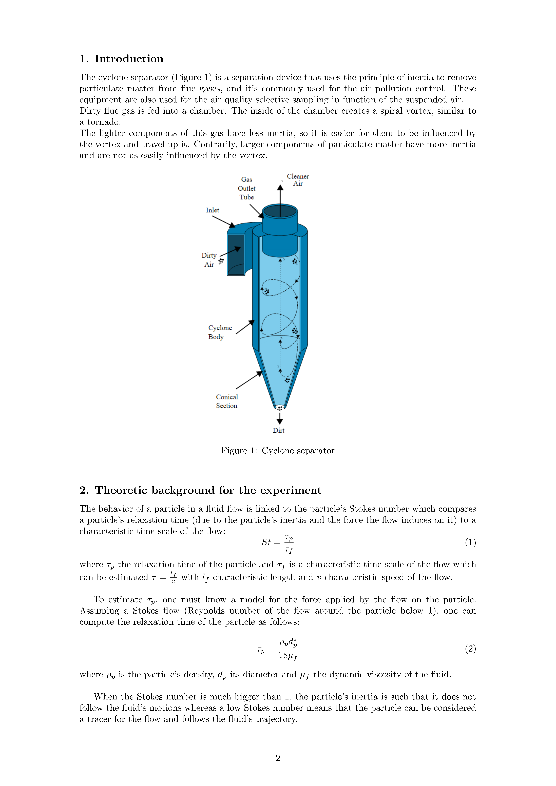
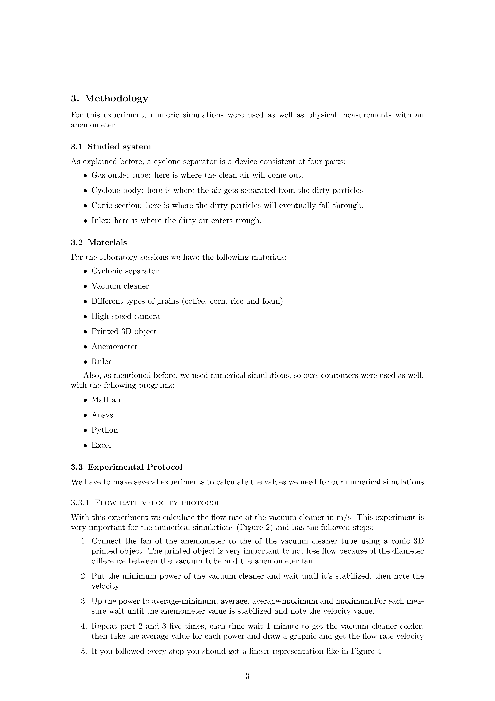
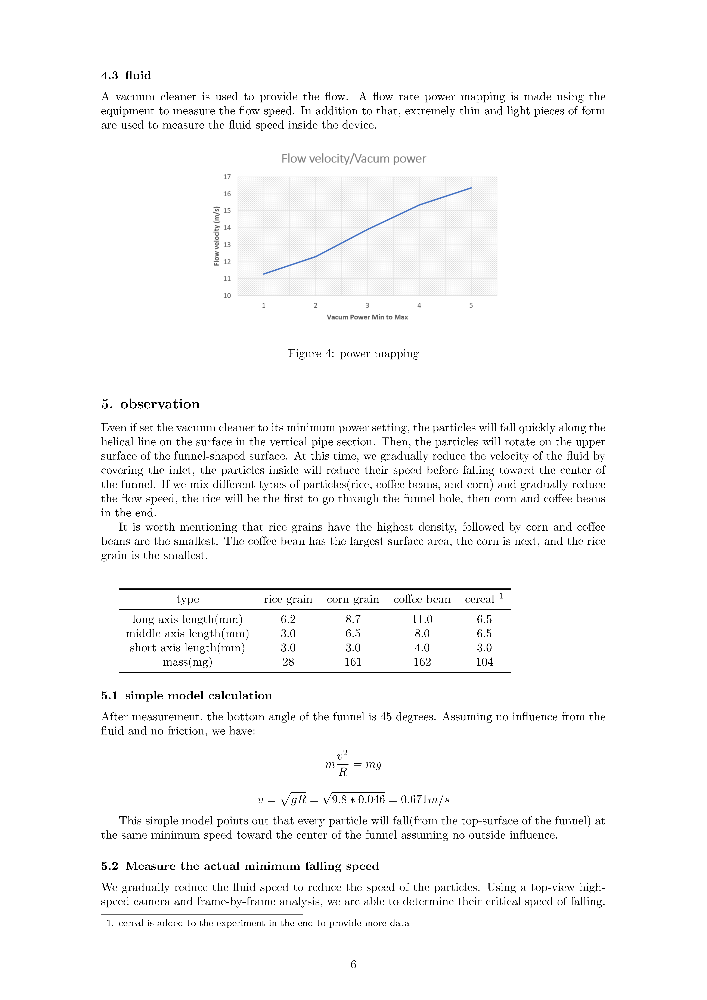
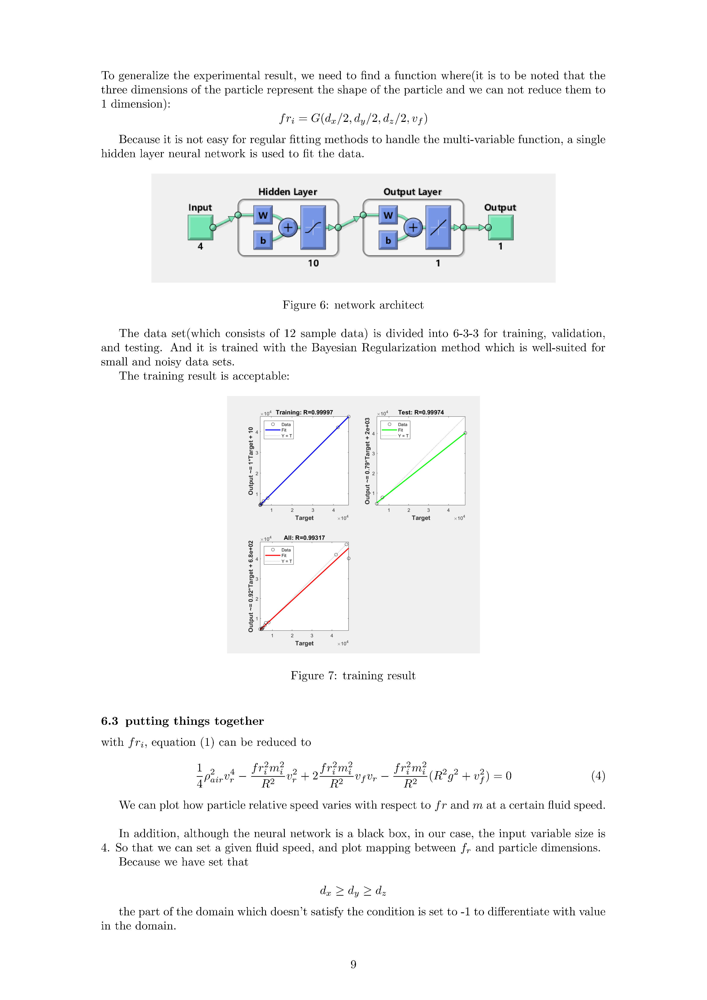
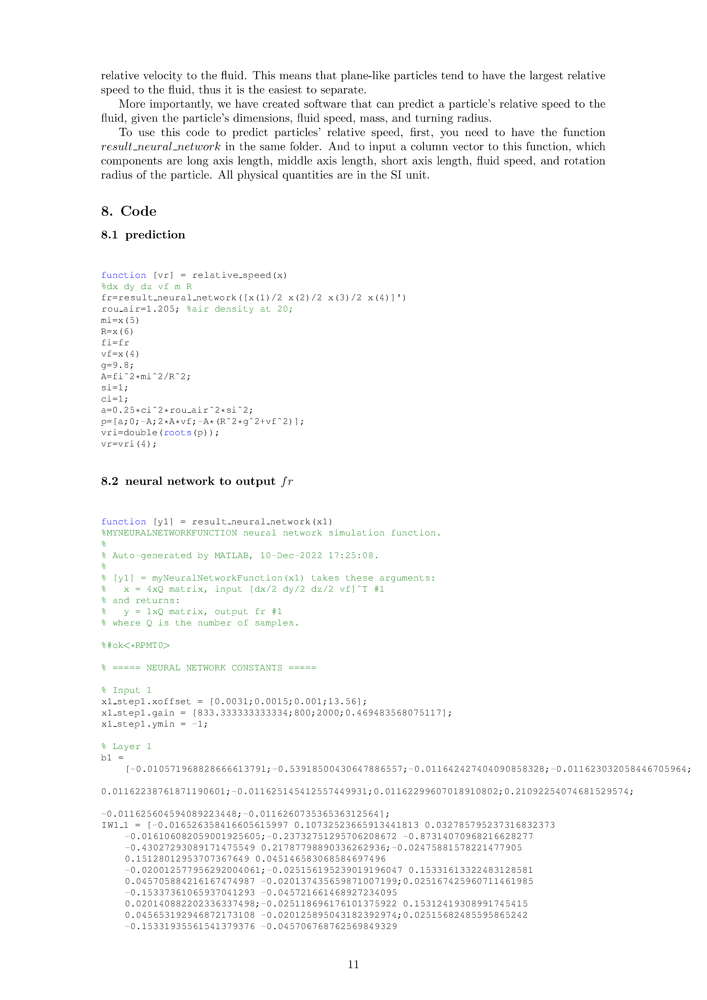

The part I wrote is from section 4 experimental method to the end. And I think the high light of this report is to use a simple model+neural network to approximate the real world situation. Maybe this is a kind of PINN. In the sense that instead of mapping directly from input(particle size, parrticle weight, fluid speed ) to output (particle relative speed), we use a model to calculate relative speed using some physical parameters. Then we use Neural network to map the input to the parameters.










